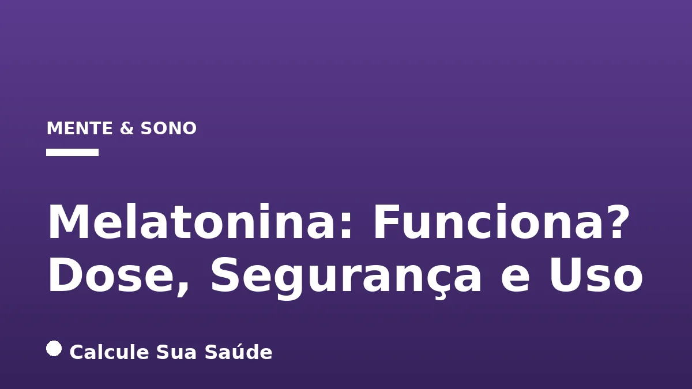

Aviso médico importante
Este conteúdo é educativo e informativo e não substitui a consulta, o diagnóstico ou o tratamento de um profissional de saúde. Em caso de sintomas, procure orientação médica.
Índice do Artigo
- 1. O Que é Melatonina e Como Ela Atua no Nosso Organismo?
- 2. Regulamentação da Melatonina no Brasil: O Que Diz a ANVISA?
- 3. Dosagem da Melatonina: O Que a Ciência Recomenda e a Lei Permite
- 4. Segurança e Efeitos Colaterais da Melatonina
- 5. Contraindicações e Precauções Importantes
- 6. Interações Medicamentosas da Melatonina
- 7. Segurança a Longo Prazo: O Que a Ciência Diz?
- 8. Quando Usar Melatonina: Eficácia e Nível de Evidência
- 9. Distúrbios do Ritmo Circadiano e Outras Condições Relacionadas ao Sono
- 10. Melatonina para Outras Condições: Evidências Limitadas ou em Estudo
- 11. Mitos Comuns Sobre a Melatonina vs. A Realidade Científica
- 12. Crescimento do Uso de Melatonina no Brasil e no Mundo
- 13. A Importância da Higiene do Sono e Outras Estratégias
- 14. Quando a Melatonina NÃO Deve Ser Usada (Contraindicações e Precauções)
- 15. A Importância da Orientação Médica e Profissional
- 16. Conclusão: Melatonina, um Aliado com Respeito à Ciência
- 17. Perguntas frequentes
A busca por um sono reparador é uma constante na vida moderna, e a melatonina emergiu como um dos suplementos mais populares para auxiliar nesse desafio. Conhecida como o “hormônio do sono”, a melatonina é produzida naturalmente pelo nosso corpo, sinalizando o momento de descanso. No entanto, a popularidade trouxe consigo muitas dúvidas: a melatonina funciona mesmo? Qual a dose ideal? É segura? E, mais importante, quando seu uso é realmente indicado e baseado em evidências científicas?
Neste artigo aprofundado, o portal Calcule Sua Saúde, comprometido com a informação baseada em evidências, desvenda os mistérios da melatonina. Abordaremos desde sua fisiologia e regulamentação no Brasil até as doses recomendadas, perfil de segurança, potenciais efeitos colaterais, interações medicamentosas e as condições em que sua eficácia é comprovada ou ainda está sob investigação. Nosso objetivo é fornecer um guia completo para que você possa tomar decisões informadas sobre a sua saúde do sono.
É fundamental ressaltar que, embora a melatonina seja um hormônio natural, sua suplementação deve ser feita com cautela e, idealmente, sob orientação de um profissional de saúde. Este conteúdo tem caráter exclusivamente informativo e educativo, não substituindo a consulta médica.
Em resumo
- A melatonina é um hormônio natural que regula o ritmo circadiano (ciclo sono-vigília), produzido principalmente pela glândula pineal.
- No Brasil, a melatonina é regulamentada como suplemento alimentar, com dose máxima de 0,21 mg/dia para adultos a partir de 19 anos, sem alegações terapêuticas.
- Doses terapêuticas (maiores que as permitidas no Brasil para suplementos) são utilizadas em outros contextos e para condições específicas, sempre sob orientação médica.
- A melatonina é geralmente segura para uso a curto prazo, mas pode causar efeitos colaterais como dor de cabeça, tontura e sonolência diurna.
- Sua eficácia é bem estabelecida para *jet lag* e síndrome da fase de sono atrasada (DSPS), mas limitada para insônia crônica na maioria dos casos.
- Existem contraindicações importantes (crianças, gestantes, lactantes, pessoas em atividades que exigem atenção) e interações medicamentosas significativas.
1. O Que é Melatonina e Como Ela Atua no Nosso Organismo?
A melatonina é um hormônio endógeno, ou seja, produzido naturalmente pelo corpo humano. Sua síntese ocorre predominantemente na glândula pineal, uma pequena estrutura localizada no cérebro. A principal função desse hormônio é atuar como um maestro do nosso ritmo circadiano, o complexo “relógio biológico” interno que orquestra os ciclos de sono e vigília ao longo de um período de 24 horas.
A produção de melatonina é intrinsecamente ligada à luz e à escuridão. Em condições de pouca luz ou escuridão, a glândula pineal é estimulada a produzir e liberar melatonina, sinalizando ao organismo que é hora de se preparar para o descanso. Em contrapartida, a exposição à luz, especialmente a luz azul de telas eletrônicas, inibe sua produção, promovendo o estado de alerta. Essa regulação é crucial para a sincronização de diversos processos fisiológicos com o ciclo dia-noite.
Funções Além do Sono
Embora seja mais conhecida por seu papel na regulação do sono, a melatonina possui outras funções fisiológicas importantes. Ela exibe um potencial de ação antioxidante, protegendo as células contra danos oxidativos. Além disso, estudos sugerem sua influência na reparação celular, na modulação da função imunitária e em múltiplos processos metabólicos. Os níveis de melatonina no corpo variam com a idade: são baixos em recém-nascidos, atingem um pico na primeira infância (entre 3 e 5 anos) e diminuem gradualmente com o envelhecimento, o que pode explicar algumas alterações no padrão de sono em idosos.
2. Regulamentação da Melatonina no Brasil: O Que Diz a ANVISA?
No Brasil, a melatonina possui um status regulatório específico que difere de muitos outros países. É crucial entender que, em território nacional, a melatonina não é aprovada como medicamento. Seu uso é permitido exclusivamente como suplemento alimentar, uma categoria regulada pela Agência Nacional de Vigilância Sanitária (Anvisa) desde outubro de 2021.
Essa regulamentação estabelece diretrizes claras para o consumo. Os suplementos de melatonina são destinados apenas a pessoas com idade igual ou superior a 19 anos. A dosagem diária máxima permitida pela Anvisa para suplementos é de 0,21 mg. É fundamental que os produtos comercializados no país sigam rigorosamente essa determinação.
Restrições e Alegações
Devido à sua classificação como suplemento alimentar, os produtos de melatonina no Brasil não podem fazer alegações de tratamento de insônia, melhora do sono, redução de estresse, humor ou qualquer outro benefício clínico. Eles não são medicamentos e, portanto, não devem ser utilizados com finalidade terapêutica. O Ministério da Saúde, por sua vez, não padroniza a melatonina em seus programas e, consequentemente, ela não é fornecida pelo Sistema Único de Saúde (SUS).
3. Dosagem da Melatonina: O Que a Ciência Recomenda e a Lei Permite
A dosagem de melatonina é um dos aspectos mais importantes e, por vezes, mais confusos para os consumidores. Ela varia significativamente dependendo do país, da regulamentação local e da finalidade de uso (suplementar ou terapêutica).
Dosagem no Brasil (Suplemento Alimentar)
Conforme a regulamentação da Anvisa, para pessoas com 19 anos ou mais, o consumo diário máximo autorizado de melatonina como suplemento alimentar é de 0,21 mg. Essa dose é considerada segura para o uso como suplemento, sem intenção terapêutica.
Dosagem para Uso Terapêutico (Fora da Regulamentação Brasileira de Suplementos)
Em contextos internacionais ou sob estrita orientação médica para fins terapêuticos (onde a melatonina pode ser classificada como medicamento ou prescrita em doses mais elevadas), as recomendações de dosagem são diferentes:
- Para distúrbios rítmicos: Geralmente entre 0,1 a 0,5 mg.
- Para distúrbios do sono (em geral): Pode variar de 1 a 5 mg.
- Para jet lag: Doses diárias entre 0,5 e 5 mg são consideradas eficazes. É importante notar que doses acima de 5 mg não demonstram ser mais efetivas para essa condição.
- Para doenças neurológicas: Doses mais elevadas, de 3 a 10 mg, podem ser consideradas.
A melatonina é geralmente recomendada para ser tomada à noite, cerca de 30 a 60 minutos ou 1 hora antes do horário desejado para dormir. Isso visa mimetizar o pico natural de produção do hormônio pelo corpo. É crucial evitar doses muito altas ou tomá-la no momento errado, pois isso pode levar a efeitos indesejados, como sonolência diurna excessiva e até mesmo dificultar a produção natural do hormônio pelo organismo a longo prazo.
| Condição/Uso | Dosagem Típica (Uso Terapêutico)* | Dosagem Máxima Anvisa (Suplemento no Brasil) |
|---|---|---|
| Distúrbios Rítmicos | 0,1 a 0,5 mg | 0,21 mg |
| Distúrbios do Sono (geral) | 1 a 5 mg | |
| Jet Lag | 0,5 a 5 mg | |
| Doenças Neurológicas | 3 a 10 mg |
*As dosagens para uso terapêutico são referências de estudos e práticas médicas internacionais, não refletindo a regulamentação de suplementos no Brasil. Sempre consulte um médico para uso terapêutico.
4. Segurança e Efeitos Colaterais da Melatonina
Quando tomada oralmente em quantidades apropriadas e por um curto período, a melatonina é geralmente considerada segura para a maioria dos adultos. No entanto, como qualquer substância ativa, ela pode causar efeitos colaterais. É fundamental estar ciente desses possíveis impactos para um uso consciente e seguro.
Efeitos Colaterais Comuns
Os efeitos colaterais mais frequentemente relatados incluem:
- Dor de cabeça
- Tontura
- Náusea e desconforto gastrointestinal (cólicas abdominais, dor de estômago, diarreia ou constipação)
- Sonolência diurna excessiva ou fadiga
- Irritabilidade ou mudanças sutis de humor
- Pesadelos vívidos ou sonhos intensos
- Redução do estado de alerta, confusão ou desorientação
Esses sintomas geralmente são leves e tendem a desaparecer com a interrupção do uso ou ajuste da dose. No entanto, a persistência ou agravamento de qualquer um desses efeitos deve levar à procura de orientação médica.
5. Contraindicações e Precauções Importantes
No Brasil, a regulamentação da Anvisa estabelece contraindicações claras para o uso de suplementos de melatonina, visando a segurança da população. A melatonina é contraindicada para:
- Crianças e adolescentes (menores de 19 anos): Devido à falta de estudos robustos sobre sua segurança e impacto no desenvolvimento.
- Gestantes e lactantes: Não há evidências suficientes para garantir a segurança durante a gravidez e amamentação.
- Pessoas envolvidas em atividades que requerem atenção constante: Como dirigir ou operar máquinas, devido ao risco de sonolência e redução do estado de alerta.
Além disso, pessoas com enfermidades preexistentes ou que utilizam outros medicamentos devem sempre consultar um médico antes de consumir melatonina. A melatonina pode, por exemplo, aumentar a depressão existente, sendo crucial a avaliação profissional para pacientes com depressão.
6. Interações Medicamentosas da Melatonina
A melatonina pode interagir com uma variedade de medicamentos, potencializando ou diminuindo seus efeitos, ou aumentando o risco de efeitos adversos. É fundamental informar seu médico sobre o uso de melatonina se você estiver tomando qualquer outro medicamento.
- Anticoagulantes: A melatonina pode aumentar o risco de sangramento quando usada concomitantemente com anticoagulantes, como a varfarina. Há relatos de casos de danos em pacientes que utilizavam essa combinação.
- Medicamentos para diabetes: Pode afetar os níveis de açúcar no sangue, exigindo monitoramento cuidadoso em pacientes diabéticos.
- Imunossupressores: A melatonina pode interferir na eficácia desses medicamentos, o que é crítico para pacientes transplantados ou com doenças autoimunes.
- Anti-hipertensivos: Pessoas em tratamento para hipertensão devem ter cautela, pois a melatonina pode influenciar a pressão arterial.
- Sedativos (incluindo álcool e benzodiazepínicos): A combinação com melatonina pode aumentar a sonolência e a sedação, potencializando os efeitos depressores do sistema nervoso central.
7. Segurança a Longo Prazo: O Que a Ciência Diz?
A segurança do uso de melatonina a longo prazo ainda é um campo com informações limitadas e que requer mais pesquisa. Embora seja geralmente bem tolerada em curtos períodos, os efeitos de seu consumo contínuo por muitos meses ou anos não são totalmente compreendidos.
Um estudo recente, publicado em 2025, que revisou registros de saúde de mais de 130.000 adultos com insônia que usaram melatonina por pelo menos um ano, encontrou uma associação com maior probabilidade de diagnóstico de insuficiência cardíaca, hospitalização pela condição ou morte por qualquer causa. É crucial enfatizar que este estudo identificou uma associação e não prova uma relação de causa e efeito. Mais pesquisas, incluindo ensaios clínicos randomizados de longo prazo, são necessárias para determinar a segurança da melatonina em usos prolongados e para entender quaisquer riscos potenciais.
8. Quando Usar Melatonina: Eficácia e Nível de Evidência
A eficácia da melatonina é um tema de grande interesse científico, e as evidências variam consideravelmente dependendo da condição a ser tratada. É importante distinguir entre as indicações com suporte robusto e aquelas com evidências limitadas ou inconclusivas.
Melatonina para Jet Lag
A melatonina é amplamente considerada eficaz na prevenção ou redução dos sintomas do jet lag, especialmente para viajantes adultos que cruzam cinco ou mais fusos horários, particularmente em viagens para o leste. Pode ser útil também para travessias de 2 a 4 fusos horários, se necessário. O momento da dose é crucial: tomar melatonina cedo no dia pode causar sonolência e atrasar a adaptação ao fuso horário local, sendo mais indicado o uso à noite. Uma revisão Cochrane de 2002 concluiu que a melatonina é notavelmente eficaz para jet lag e o uso ocasional a curto prazo parece ser seguro. No entanto, uma análise de 2020 no Reino Unido levou à retirada da indicação de melatonina para jet lag no serviço nacional de saúde devido à falta de evidências robustas para essa população específica, ressaltando a complexidade da avaliação de evidências.
Melatonina e Insônia
- Insônia temporária: Pode ajudar algumas pessoas a lidar com insônia de curta duração.
- Insônia crônica: Há poucas evidências de que a melatonina trate eficazmente a insônia crônica na maioria dos casos. Ela não é um “promotor de sono” no sentido de um sedativo, mas sim um regulador do ritmo circadiano que pode ajudar a “reajustar nossos relógios” quando o sono é difícil.
- Síndrome da Fase de Sono Atrasada (DSPS): É eficaz no tratamento dessa síndrome, diminuindo significativamente a latência do início do sono.
- Idosos: Pode melhorar a qualidade do sono em idosos, cuja produção natural de melatonina é frequentemente reduzida.
9. Distúrbios do Ritmo Circadiano e Outras Condições Relacionadas ao Sono
Além do jet lag e da insônia em casos específicos, a melatonina pode ser indicada para outros distúrbios do ritmo circadiano, onde a dessincronização do relógio biológico é a principal causa dos problemas de sono.
- Transtornos de adiantamento ou atraso de fase: Ajuda a realinhar o ciclo sono-vigília.
- Sono de não 24 horas: Uma condição rara onde o ritmo circadiano não se alinha com o ciclo de 24 horas.
- Latência prolongada do sono: Quando há dificuldade em iniciar o sono.
- Distúrbios comportamentais do sono REM: Pode ser utilizada como parte do tratamento.
- Distúrbios do sono em que a produção de melatonina é reduzida: Especialmente em populações específicas.
Trabalho por Turnos
Os estudos sobre a eficácia da melatonina para ajustar o horário de sono em trabalhadores por turnos são escassos ou inconclusivos. Embora algumas fontes sugiram que possa ajudar a garantir um tempo de descanso adequado nesses casos, a evidência científica ainda não é robusta o suficiente para uma recomendação generalizada.
10. Melatonina para Outras Condições: Evidências Limitadas ou em Estudo
A melatonina tem sido objeto de pesquisa para uma gama de outras condições, mas para muitas delas, as evidências ainda são limitadas, preliminares ou inconclusivas. É importante não confundir o potencial de pesquisa com a eficácia comprovada.
- Doença de Alzheimer: Nas fases iniciais, a melatonina pode ajudar a reajustar os ciclos do sono e diminuir sintomas associados ao anoitecer, como confusão, agressão, inquietação e ansiedade. No entanto, não há evidências de que trate a progressão da doença em si. Para mais informações sobre a doença, consulte Alzheimer: Prevenção, Sintomas e Novos Tratamentos.
- Transtorno Afetivo Sazonal (TAS): Pode ser útil em situações de TAS, que está ligado à variação da luz solar.
- Ansiedade: Utilizada para controlar a ansiedade antes e depois de cirurgias, com algumas evidências de benefício.
- Enxaqueca: Existem evidências iniciais de benefício para a prevenção de enxaqueca.
- Depressão: Embora seu análogo, a agomelatina, seja aprovado para esta indicação, a melatonina em si é provavelmente ineficaz para o tratamento da depressão.
- Doenças Neurológicas: Pode ser usada para distúrbios do sono associados a condições como espectro do autismo, transtorno de déficit de atenção e hiperatividade (TDAH) e síndrome de Smith-Magenis.
- Câncer: Pesquisas estão investigando os efeitos da melatonina no tratamento do câncer, incluindo a melhora da qualidade de vida e do sono em pacientes. No entanto, as evidências atuais são incertas e mais estudos robustos são necessários.
- Distúrbios Gastrointestinais: Estudos limitados sugerem que a melatonina pode ajudar com dispepsia funcional, sintomas de refluxo (DRGE) ou síndrome do intestino irritável (SII) como terapia adjuvante.
- Unidade de Terapia Intensiva (UTI): Há evidências insuficientes para determinar se a administração de melatonina melhora a quantidade e qualidade do sono em adultos na UTI.
11. Mitos Comuns Sobre a Melatonina vs. A Realidade Científica
A popularidade da melatonina gerou uma série de mitos e concepções errôneas. É fundamental desmistificar essas ideias para um uso mais consciente e alinhado com as evidências científicas.
Mito 1: "A melatonina é uma solução mágica ou um somnífero infalível para a insônia."
O que a ciência diz: A melatonina não é uma solução universal para a insônia crônica. Ela atua como um regulador do ritmo circadiano, sinalizando ao corpo que é hora de dormir, mas não é um indutor direto de sono no sentido de um sedativo. Fatores como hábitos de sono (higiene do sono) e ambiente também são cruciais para um sono saudável. Para muitos casos de insônia, outras abordagens, como a terapia cognitivo-comportamental para insônia (TCC-I), são mais eficazes.
Mito 2: "Tomar uma dose maior de melatonina é sempre melhor para dormir."
O que a ciência diz: A dose adequada é fundamental. Doses mais altas raramente são mais eficazes e, na verdade, podem aumentar a incidência de efeitos colaterais, como sonolência diurna, tontura e dor de cabeça. No Brasil, a dose máxima permitida como suplemento é de 0,21 mg, e doses terapêuticas maiores devem ser estritamente supervisionadas por um profissional de saúde, pois não há benefício comprovado em exceder certas dosagens para a maioria das indicações.
Mito 3: "A melatonina é completamente natural e não apresenta riscos ou efeitos colaterais."
O que a ciência diz: Embora seja um hormônio natural, a suplementação de melatonina pode causar efeitos colaterais como dor de cabeça, tontura, náusea, sonolência diurna, irritabilidade e pesadelos. Existem contraindicações para grupos específicos (crianças, adolescentes, gestantes, lactantes) e interações medicamentosas importantes com anticoagulantes, medicamentos para diabetes, imunossupressores e sedativos. A segurança do uso a longo prazo ainda não é totalmente conhecida e está sob investigação, exigindo cautela.
12. Crescimento do Uso de Melatonina no Brasil e no Mundo
A procura por produtos contendo melatonina tem demonstrado um crescimento notável em diversas partes do mundo, e o Brasil não é exceção. A autorização da melatonina como suplemento alimentar pela Anvisa em outubro de 2021 representou um marco importante, facilitando o acesso ao hormônio no país e impulsionando sua popularidade.
Embora dados epidemiológicos específicos do Brasil sobre a prevalência do uso de melatonina ainda estejam em desenvolvimento, o aumento da demanda e a própria regulamentação indicam uma crescente utilização pela população. Esse cenário reflete uma tendência global. Nos Estados Unidos, por exemplo, o uso de suplementos de melatonina aumentou significativamente de 0,4% dos entrevistados em 1999-2000 para 2,1% em 2017-2018, conforme dados de pesquisas de saúde. Esse crescimento sublinha a necessidade de informações claras e baseadas em evidências para os consumidores.
13. A Importância da Higiene do Sono e Outras Estratégias
É fundamental lembrar que a melatonina, mesmo quando indicada, é apenas uma parte de uma abordagem mais ampla para a saúde do sono. A higiene do sono, que engloba um conjunto de hábitos e práticas, continua sendo a base para um descanso de qualidade. Isso inclui manter horários regulares para dormir e acordar, criar um ambiente de sono adequado (escuro, silencioso e fresco), evitar cafeína e álcool antes de deitar, e limitar a exposição a telas eletrônicas à noite.
Para distúrbios do sono mais complexos, como a insônia crônica, a terapia cognitivo-comportamental para insônia (TCC-I) é frequentemente considerada a intervenção de primeira linha, com evidências robustas de eficácia. A melatonina, quando utilizada, deve ser vista como um coadjuvante ou uma ferramenta para condições muito específicas, e não como a única solução.
14. Quando a Melatonina NÃO Deve Ser Usada (Contraindicações e Precauções)
Para garantir a segurança e evitar riscos à saúde, é crucial estar ciente das situações em que a melatonina é contraindicada ou exige precaução extrema. A seguir, um resumo das principais restrições:
- Crianças e adolescentes (menores de 19 anos): A segurança e os efeitos a longo prazo no desenvolvimento ainda não foram estabelecidos.
- Gestantes e lactantes: Não há dados suficientes para garantir a segurança para a mãe ou para o bebê.
- Pessoas com doenças autoimunes: Pode interferir na função imunológica.
- Indivíduos com depressão: Pode agravar quadros depressivos.
- Pessoas com epilepsia: Há relatos de que pode aumentar a frequência de convulsões em alguns casos.
- Pacientes com doenças hepáticas ou renais graves: A metabolização e eliminação da melatonina podem ser comprometidas.
- Pessoas em uso de medicamentos específicos: Principalmente anticoagulantes, imunossupressores, medicamentos para diabetes e anti-hipertensivos, devido ao risco de interações medicamentosas.
- Antes de dirigir ou operar máquinas: Devido ao risco de sonolência e redução do estado de alerta.
Em todos esses cenários, a consulta com um profissional de saúde é indispensável para avaliar os riscos e benefícios e determinar a melhor conduta.
15. A Importância da Orientação Médica e Profissional
Como um portal de saúde baseado em evidências, o Calcule Sua Saúde reitera a importância da orientação médica e profissional para qualquer decisão relacionada à sua saúde, especialmente no que diz respeito à suplementação de hormônios como a melatonina. A automedicação ou o uso inadequado podem levar a efeitos indesejados, interações perigosas e mascarar condições de saúde subjacentes que necessitam de diagnóstico e tratamento específicos.
Um médico ou outro profissional de saúde qualificado pode avaliar seu histórico clínico, suas condições de saúde preexistentes, os medicamentos que você utiliza e seus padrões de sono para determinar se a melatonina é apropriada para o seu caso, qual a dosagem mais segura (dentro ou fora da regulamentação de suplementos, a depender do contexto e da prescrição) e por quanto tempo deve ser utilizada. Eles também podem investigar outras causas para problemas de sono e propor abordagens mais eficazes e seguras.
16. Conclusão: Melatonina, um Aliado com Respeito à Ciência
A melatonina é, sem dúvida, um hormônio fascinante com um papel crucial na regulação do nosso ritmo circadiano e, consequentemente, na qualidade do nosso sono. Sua disponibilidade como suplemento alimentar no Brasil, com a dose máxima de 0,21 mg, reflete um reconhecimento de seu potencial, mas também a necessidade de cautela e conformidade com as diretrizes regulatórias.
As evidências científicas atuais indicam que a melatonina é particularmente eficaz para condições como o jet lag e a síndrome da fase de sono atrasada (DSPS), e pode ser útil para idosos com deficiência na produção natural do hormônio. No entanto, para a insônia crônica na maioria dos casos, ela não se mostra uma "solução mágica", e outras intervenções, como a higiene do sono e a TCC-I, são frequentemente mais indicadas.
É imperativo que o uso da melatonina seja sempre informado e consciente, respeitando as doses recomendadas, as contraindicações e as potenciais interações medicamentosas. A segurança a longo prazo ainda está sob investigação, reforçando a necessidade de prudência. Em última análise, a melatonina pode ser um aliado valioso para a saúde do sono, mas seu uso deve ser guiado pela ciência e, idealmente, pela orientação de um profissional de saúde, garantindo que os benefícios superem os riscos potenciais.
17. Perguntas frequentes
A melatonina é um medicamento para insônia no Brasil?
Não, no Brasil, a melatonina não é aprovada como medicamento. Ela é regulamentada exclusivamente como suplemento alimentar pela Anvisa, com uma dosagem diária máxima permitida de 0,21 mg para pessoas com 19 anos ou mais.
Qual a dose máxima de melatonina permitida no Brasil?
Como suplemento alimentar no Brasil, a Anvisa autoriza o consumo diário máximo de 0,21 mg de melatonina para pessoas com idade igual ou superior a 19 anos.
Quais são os principais efeitos colaterais da melatonina?
Os efeitos colaterais mais comuns incluem dor de cabeça, tontura, náusea, desconforto gastrointestinal, sonolência diurna excessiva, fadiga, irritabilidade e pesadelos vívidos. Em caso de sintomas persistentes, procure orientação médica.
Quem não pode usar melatonina?
No Brasil, os suplementos de melatonina são contraindicados para crianças e adolescentes (menores de 19 anos), gestantes, lactantes e pessoas envolvidas em atividades que exigem atenção constante. Indivíduos com doenças preexistentes ou que tomam outros medicamentos devem consultar um médico.
A melatonina é eficaz para o *jet lag*?
Sim, a melatonina é considerada eficaz na prevenção ou redução do *jet lag*, especialmente para viajantes adultos que cruzam cinco ou mais fusos horários. O momento da dose é crucial para sua eficácia.
A melatonina trata a insônia crônica?
Há poucas evidências de que a melatonina trate eficazmente a insônia crônica na maioria dos casos. Ela atua como um regulador do ritmo circadiano, não como um indutor direto de sono. Para insônia crônica, outras abordagens como a terapia cognitivo-comportamental são frequentemente mais eficazes.
A melatonina interage com outros medicamentos?
Sim, a melatonina pode interagir com anticoagulantes (aumentando o risco de sangramento), medicamentos para diabetes (afetando os níveis de açúcar no sangue), imunossupressores, anti-hipertensivos e sedativos, potencializando a sonolência. Sempre informe seu médico sobre o uso de melatonina.
É seguro usar melatonina a longo prazo?
A informação sobre a segurança do uso de melatonina a longo prazo é limitada e requer mais pesquisa. Estudos recentes indicam a necessidade de cautela e não provam uma relação de causa e efeito para riscos potenciais a longo prazo, mas reforçam a importância da avaliação médica.
Leia também
Referências e Fontes
1. Ministério da Saúde - Portal Gov.br. Melatonina. Disponível em: gov.br
2. Mayo Clinic. Melatonin. Disponível em: mayoclinic.org
3. Alta Diagnósticos. Melatonina: o que é e para que serve. Disponível em: altadiagnosticos.com.br
4. Rede D'Or. Melatonina: o que é, para que serve e quando tomar?. Disponível em: rededorsaoluiz.com.br
5. MedicalPoint Hospital. Melatonina: O que é, como funciona e uso seguro. Disponível em: medicalpointinternational.com
6. Unimed Campinas. O Que É Melatonina: Entenda O Papel Desse Hormônio. Disponível em: unimedcampinas.com.br
7. Mayo Clinic Press. Melatonin for sleep: Benefits, timing and safety. Disponível em: newsnetwork.mayoclinic.org
8. Cochrane Complementary Medicine. MELATONIN FOR THE PREVENTION AND TREATMENT OF JET LAG. Disponível em: cochrane.org
9. Anvisa. Anvisa autoriza melatonina como suplemento alimentar. Disponível em: gov.br